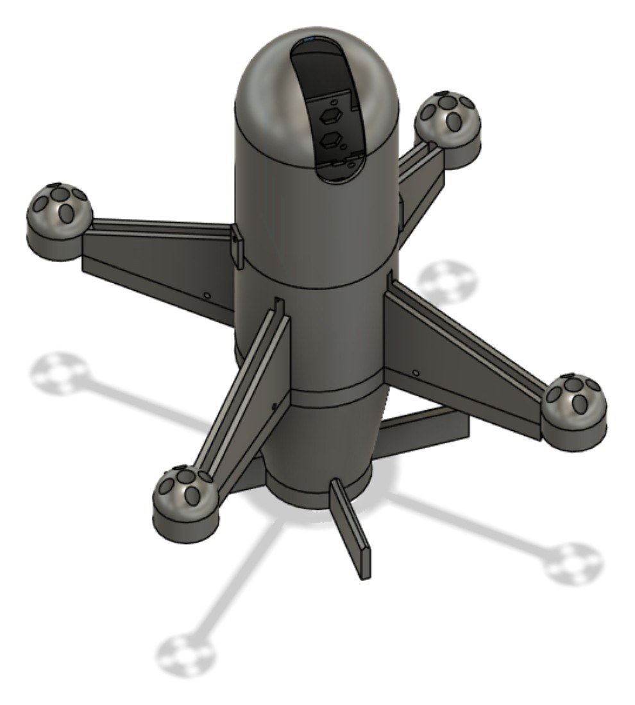
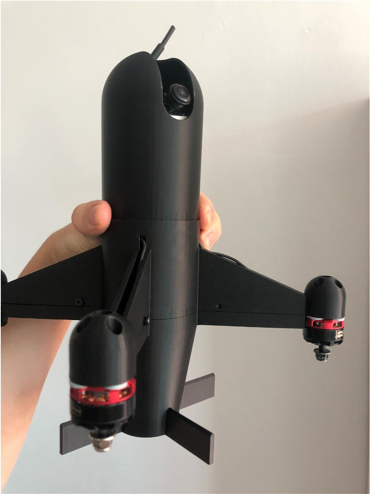
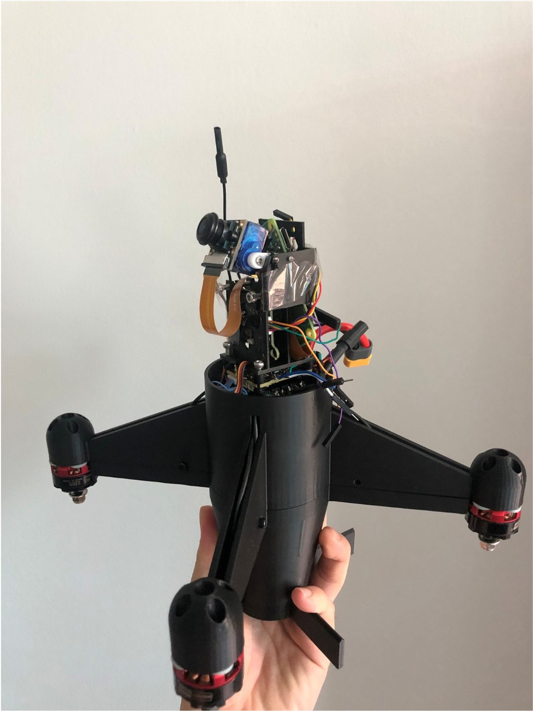

온디바이스 AI 탐지·대응 드론
국립한국교통대학교 컴퓨터공학과 졸업작품
팀원: 박찬우, 김유나, 강민서
지도교수: 박현철 교수
정찰드론에 탑재한 Raspberry Pi Zero 2 W가 서버나 클라우드 없이 기체 안에서 카메라 영상을 분석해 드론을 탐지합니다.
탐지 결과는 조종사 고글 화면과 관제 GUI에 동시에 표시되고, 관제 근무자가 확인·승인하면 요격·추적 대응(Gazebo 시뮬레이션)이 실행됩니다.
99.0%미학습 표적 조각 716개 분류 시험 균형 정확도 (드론 60/60, 오분류 0건)
28~30fps기체 실측 고글 표시 속도
초당 3.5~5회기체 내 AI 분석 속도
7 / 10요격 시뮬레이션 명중 (10개 상황)
기체
팀이 직접 설계하고 3D 프린팅으로 제작한 정찰드론입니다.



비행
2. 비행 시연 (바닥 시점)
기체 탑재 AI 탐지
3. 기체 카메라 화면에서 실물 드론 탐지
정찰드론 카메라에 잡힌 실물 드론을 Pi가 직접 판정해 박스와 확률(DRONE DETECTED)을 고글 화면에 표시합니다.
4. 관제 GUI 실시간 수신
Pi가 Wi-Fi로 보낸 영상·박스·판정을 관제 노트북이 받아 경보, 탐지 순간 캡처, 이벤트 로그로 보여줍니다. 근무자는 판정을 확인하거나 정정할 수 있습니다.
5. 화면 속 표적 판정 (고글 출력)
노트북 화면의 표적(새·풍선·드론)을 정찰드론 카메라로 비추면 Pi가 판정해 고글 화면에 표시합니다.
외형 분류 결과
같은 경량 분류기(MobileNetV3-Small, 5종)로 드론, 새, 오물풍선 영상을 판정한 결과입니다.
6. 드론
7. 새 (갈매기)
8. 오물풍선
대응 시뮬레이션
9. 요격 드론: 비례항법(PN) 유도 (Gazebo)
요격 드론이 카메라 검출 결과와 자세·고도 등 기체가 알 수 있는 값만으로 표적을 탐색·추적해 명중합니다. 왼쪽은 오차·명령 그래프, 가운데는 기체 카메라와 관제 패널, 오른쪽은 3인칭 화면입니다.
10. 추적 태그 부착 (Gazebo)
오물풍선은 터뜨리지 않고, 추적 드론이 막대 끝 깔때기로 풍선 줄을 받아 추적 태그를 겁니다.